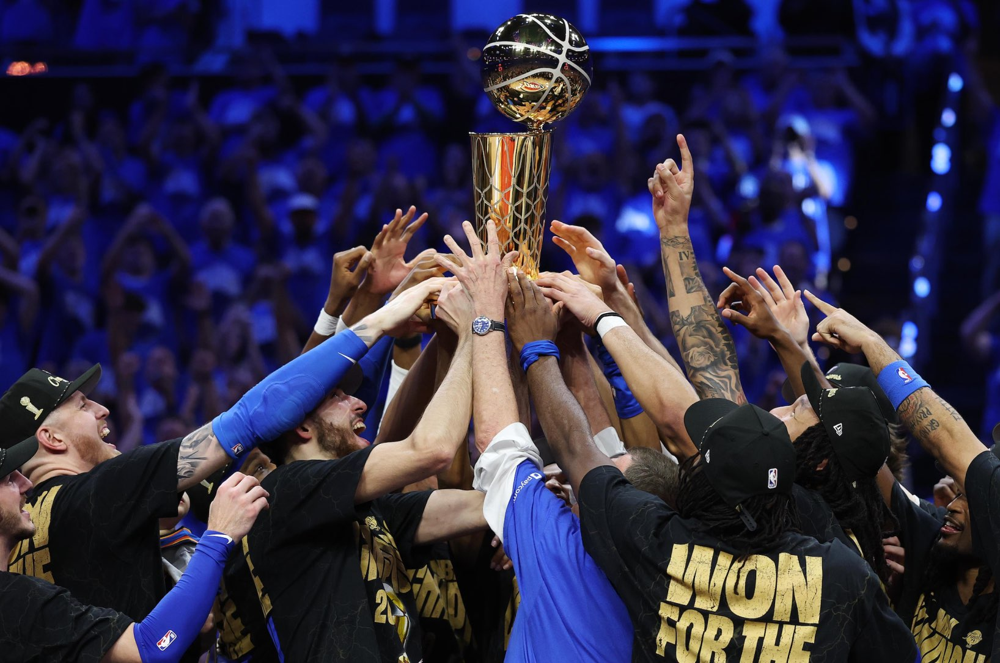

The Double Apron system has changed how teams are able to build rosters. How have teams adapted?

The Rise of the Young, Cost-Controlled Team
Franchises best positioned under this new architecture are those that can accumulate surplus value — that can aggregate substantial talent at low cost. In the years following the ratification of the 2023 CBA, the NBA has thus seen the success of particularly young, draft-capital-forward teams, as newly drafted players start their careers on team-friendly rookie deals. The league’s current two top teams —The Oklahoma City Thunder and Detroit Pistons — both exemplify this model, each leading their respective conferences despite below average payrolls (the Thunder rank 8th lowest, the Pistons 10th) and team ages (the Thunder rank 6th lowest, the Pistons 13th).
The Oklahoma City Thunder
The Oklahoma City Thunder currently sit atop the NBA standings as the defending league champions. Oklahoma City's path to contention began with a deliberate accumulation of draft capital following the departure of multiple star players between 2017 and 2020. Rather than pushing for immediate championship contention with its draft capital and payroll space — the dominant strategy under the prior CBA — the franchise converted existing veteran talent into first-round picks and prospects through a series of particularly wise trades. Ultimately, Oklahoma City assembled one of the largest collections of draft assets in recent league history: by 2020, the Thunder held the rights to a sprawling portfolio of future first round picks (17 through 2026), pick swaps, and second-round-picks extending into the early 2030s. The value of these assets was, primarily, financial flexibility; draft picks carry no salary implications until exercised and rookie-scale contracts generate elite, talented young players paid below market rate.
The Thunder used this capital to draft multiple high-upside prospects in a single cycle — selecting three of the top fifteen picks in the 2022 Draft alone — and continued adding elite young talent in subsequent drafts.each player, per Section VIII of the CBA, entered the league on rookie-scale contracts — fixed, below-market agreements bind drafted players to their team for four years. For a franchise operating below the Apron thresholds, this concentration of high-value, low-cost talent thus generated enormous surplus value. Moreover, these cost-controlled contracts allowed the franchise to operate below the salary cap and retain access to MLEs and trade aggregation rights, through which the Thunder added multiple elite contributors in the 2024 offseason. The on-court results followed: within two years of drafting its young core, OKC reached the first seed in the Western Conference, and subsequently won the 2026 NBA Championship — all with the fifth-lowest payroll in the league.
The Detroit Pistons
In April 2023, the National Basketball Association (NBA) and the National Basketball Players Association (NBPA) ratified a new Collective Bargaining Agreement (CBA) to govern the league’s economic landscape through the 2029-30 season. In professional sports leagues, CBAs allow owners, players, and franchises to bargain for and agree upon a legally binding framework for player compensation, roster building, and most other matters of labor across the league. The NBA and NBPA, in the past, ratified a new CBA approximately every six years, tweaking and updating league operations.
Yet the 2023 CBA introduced a mechanism unprecedented in design and ambition: the double Apron system. Unlike the luxury tax system, this Apron system restricts how overspending teams can operate at a fundamental level; among other penalties, for example, the CBA provides for restrictions on trade and loss of first-round draft picks. These consequences represent a drastic departure from the NBA’s decades-old financial deterrence model.
This project argues, using performance data, payroll trends, trade behavior, and franchise case studies, that the Apron system has fundamentally reshaped competition, rewarding surplus value and organizational competence over teams' financial scale.